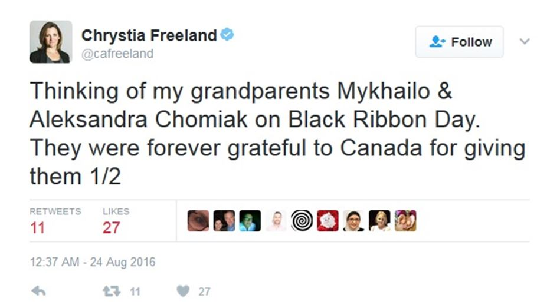

Le Congrès russe du Canada voudrait exprimer ses plus vives inquiétudes sur la nomination de Mme Chrystia Freeland en tant que ministre des Affaires étrangères du Canada.
À part de se faire remarquer en tant que critique attitrée de la Russie, Mme Freeland a peu des qualifications requises pour son poste. La diplomatie présuppose une capacité à construire des ponts et à influencer autant les amis que les adversaires. La liste des critiques hostiles au gouvernement russe de Mme Freeland frôle les insultes personnelles à l'encontre du président russe Vladimir Poutine. Ses vues biaisées anti-russes sont bien connues de tous et présagent une longue période très froide dans les relations entre le Canada et la Russie.
La défense soutenue de la cause ukrainienne par Mme Freeland n'est également pas exempte de partialité. Née d'une famille canadienne-ukrainienne avec des liens avec les groupes anti-soviétiques, anti-russes et manifestement pro-fascistes, comme l'Organisation des nationalistes ukrainiens, elle a exprimé à maintes reprises son admiration pour la génération d'Ukrainiens exilés et leur nationalisme radical ukrainien.
C'est maintenant un fait bien documenté que le grand-père maternel de la ministre Freeland, Mykhailo Khomiak (connu sous le nom de Michael Chomiak au Canada) était un collaborateur nazi proéminent, le rédacteur en chef du journal nazi Krakivski Visti et le subordonné direct d'Emil Gassner, le Chef du service de presse du gouvernement général nazi dirigé par le criminel de guerre Hans Frank, reconnu coupable et condamné. Le journal édité par M. Khomiak était un rouage essentiel de la machine d'extermination de masse nazie. Il s'est distingué en faisant l'éloge d'Adolf Hitler, en encensant les politiques nazies et en fomentant l'antisémitisme. Pourtant, dans la présentation de Mme Freeland, les efforts de M. Khomiak n'étaient que «pour rendre la liberté et la démocratie à l'Ukraine».
Mme Freeland n'a jamais caché le fait de l'influence déterminante que ses grands-parents maternels ont exercé sur son développement politique et personnel. Elle a admis que leur expérience «a eu un très grand effet» sur elle peu de temps après avoir été nommée au Cabinet en 2015. Elle a salué l'engagement de la diaspora ukrainienne à l'idée qu'elle avait une «responsabilité particulière envers le pays dans lequel elle avait été forcée de fuir». Elle partage apparemment l'opinion du Congrès ukrainien canadien que la Russie «est un ennemi historique parce qu'elle avait été le principal oppresseur de la liberté de l'Ukraine». Bien que le groupe de droite de la diaspora non gouvernementale puisse choisir librement ses ennemis historiques, quand une telle opinion motive les actions du chef de l'un des ministères clés du gouvernement fédéral du Canada, non seulement il présage un danger grave aux relations du Canada avec un «ennemi historique» ainsi désigné, mais aussi un évident défi aux intérêts nationaux canadiens en tant que tels.
Lorsque questionnée sur les liens de son grand-père avec les nazis lors de la conférence de presse du 6 mars, la ministre Freeland a dénoncé ces questions qui, selon elle, ont comme source une campagne russe de « désinformation » destinée à déstabiliser la démocratie canadienne.
Le fait que la ministre Freeland connaissait les détails de la biographie de son grand-père depuis plus de deux décennies est maintenant de notoriété publique.
Mykhailo Khomiak et des dignitaires nazis
Pourtant, Mme Freeland est allé bien plus loin que simplement de garder le silence sur cette page ignominieuse de son histoire familiale. Sachant parfaitement que son grand-père était un collaborateur nazi zélé dont le journal justifiait le massacre des Juifs, des Polonais, des Russes et des Ukrainiens anti-nazis dans les territoires contrôlés par le Troisième Reich, elle a aidé à éditer sa biographie pour le faire apparaître comme un authentique ukrainien patriote opposé à Staline et à Hitler.
Freeland est bien consciente de «l'histoire tumultueuse» du mouvement nationaliste ukrainien. Maintenant que le passé de son grand-père a été exposé, elle devrait cesser d'être évasive et aborder la question directement, ouvertement et honnêtement et en reconnaissant la vérité. À tout le moins, elle le doit à ses électeurs de Toronto et à tous les survivants canadiens de la terreur du régime nazi, qui transmettent les souvenirs traumatiques du génocide perpétré par les nazis, à leurs enfants et à leurs petits-enfants.
Ce qui nous frappe vraiment, c'est que la meilleure défense de la ministre Freeland a été une contre-attaque calomnieuse contre la Russie et les responsables russes accusés de désinformation. Grâce à cette action, elle a, en substance, exploité son poste de ministre des Affaires étrangères pour alimenter la campagne fourbe de calomnies contre la Russie. Nous croyons fermement que le rôle principal du ministre des Affaires étrangères du Canada devrait être tout le contraire: construire des relations basées sur la bonne foi et la confiance mutuelle et la sincérité, sans jamais donner de crédibilité aux accusations potentielles de malhonnêteté.
Le Canada ne devrait pas devenir un otage d'un agenda personnel de ses dirigeants politiques. La politique étrangère du Canada ne devrait pas être motivée par la vieille haine de la diaspora ethnique, et encore moins par le patrimoine familial d'un ministre. En tant que citoyenne et à titre privé Freeland est parfaitement dans son droit de «se sentir obligée envers l'Ukraine», comme elle l'a elle-même reconnue, cependant la loyauté de la ministre Freeland devrait être pour le Canada. Le public canadien doit être assuré que la ministre Freeland est d'abord et avant tout une championne du Canada et non une ultra-nationaliste ukrainienne qui utilise son poste ministériel pour apporter un soutien financier et militaire au gouvernement de Kiev, qui est en train de mener une guerre non déclarée à ses propres citoyens. Nous voulons être assurés que, dans la poursuite de relations productives, respectueuses et mutuellement avantageuses avec la Russie, nos intérêts nationaux ne seront pas sacrifiés à des politiques qui reflètent principalement les préjugés personnels et les animosités ethniques du plus haut diplomate du pays.
Il est vraiment inacceptable pour des centaines de milliers de Canadiens russes qui voient en la ministre des Affaires étrangères une personne ayant des opinions biaisées et ouvertement russophobes. Nous trouvons honteux que la ministre Freeland ait tenté de blanchir le passé nazi de son grand-père en attribuant les faits révélés de sa véritable biographie à une supposée campagne de désinformation de la Russie.
Nous considérons, avec les opinions radicales de la ministre Freeland et l'énergie, avec lesquelles elle pousse le Canada dans une confrontation avec la Russie, totalement évitable, inapte au poste de ministre des Affaires étrangères.
Nous demandons aux dirigeants du parti d'exprimer leur déception face au manque de franchise de Mme Freeland pour essayer de blanchir le passé de sa famille. Nous demandons instamment à votre gouvernement de s'interroger sur le manque d'intégrité personnelle que Mme Freeland a démontré dans les fausses déclarations délibérées sur l'histoire de son grand-père, allant même jusqu'à faire l'éloge de du passé de sa famille alors qu'il aurait dû été condamné et désavoué sans équivoque. Nous dénonçons la déclaration insensée et provocante de la ministre Freeland aux médias le 6 mars 2017.
M. Trudeau,
Nous faisons appel à la lucidité et au pragmatisme de votre gouvernement dans l'espoir qu'une coopération mutuellement bénéfique puisse être rétablie dans les relations du Canada avec la Fédération de Russie. Nous vous prions d'envisager de réévaluer la pertinence de Mme Freeland pour le poste chargé du portefeuille des affaires étrangères du Canada. La sécurité nationale du Canada et les intérêts commerciaux du Canada sont compromis tant que ce poste est confié à quelqu'un qui semble incapable d'avoir une vision impartiale sur l'une des puissances les plus influentes du monde qui est aussi notre plus grand voisin.
Partager cette page